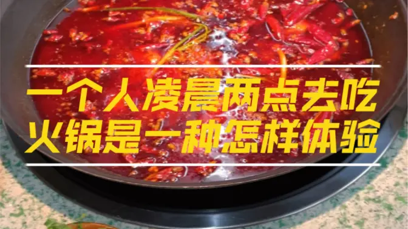

阿里百秀 凌晨2点一个人去吃火锅是一种怎样体验？ 凌晨2点一个人去吃火锅是一种怎样体验？  凌晨2点一个人去吃火锅是一种怎样体验？ 凌晨2点一个人去吃火锅是一种怎样体验？ 美食节 小红薯发布于2022-11-19 凌晨2点一个人去吃火锅是一种怎样体验？ 阅读(2417)评论(1)赞 (18) 标签：美食 / 体验 美食节 小红薯发布于2022-11-19 凌晨2点一个人去吃火锅是一种怎样体验？ 阅读(2417)评论(1)赞 (18) 标签：美食 / 体验 美食节 小红薯发布于2022-11-19 凌晨2点一个人去吃火锅是一种怎样体验？ 阅读(2417)评论(1)赞 (18) 标签：美食 / 体验 美食节 小红薯发布于2022-11-19 凌晨2点一个人去吃火锅是一种怎样体验？ 阅读(2417)评论(1)赞 (18) 标签：美食 / 体验 美食节 小红薯发布于2022-11-19 凌晨2点一个人去吃火锅是一种怎样体验？ 阅读(2417)评论(1)赞 (18) 标签：美食 / 体验